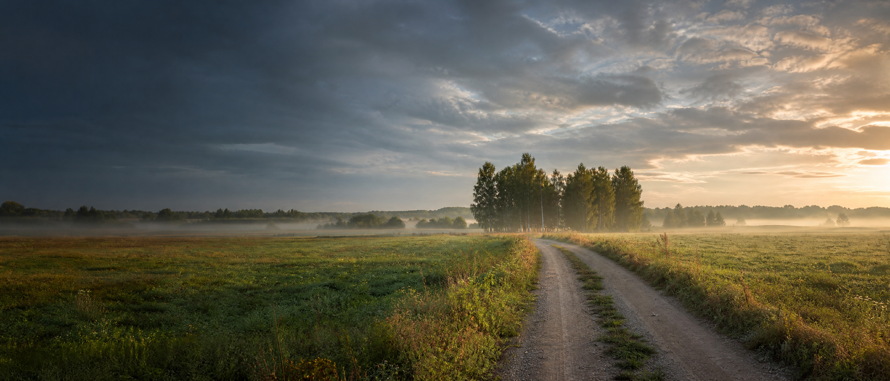

BIAŁOGRĄDY · PODLASIE
Lokalne informacje
Białogrądy
Aktualności, ogłoszenia, wspomnienia i sprawy dotyczące naszej miejscowości.
Przejdź do aktualności →Ważne komunikaty
Brak wyróżnionych komunikatów.
Najnowsze informacje
Aktualności
Wszystkie →Ogłoszenia
Wszystkie →Strefa mieszkańca
Pamięć o miejscu
Kronika Białogradów
Stare dokumenty, wzmianki w gazetach, zdjęcia i opowieści mieszkańców. To właśnie tutaj zbieramy ślady historii naszej miejscowości.
O miejscowości
Białogrądy
i okolica
Białogrądy leżą w gminie Grajewo, w powiecie grajewskim, w województwie podlaskim. W szerszym krajobrazie regionu ważne są łąki, lasy i dolina Biebrzy.
Ta strona jest prywatną inicjatywą mieszkańców i nie zastępuje informacji urzędowych.
Oficjalna strona Gminy Grajewo ↗Masz propozycję?
Napisz do nas
Wyślij ogłoszenie, zdjęcie, dokument lub wspomnienie. Nic nie pojawia się automatycznie — materiały są sprawdzane przed publikacją.